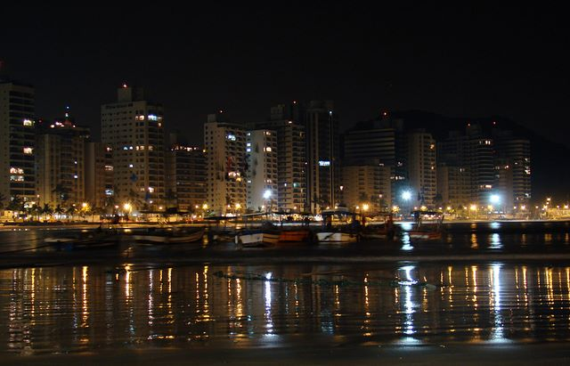
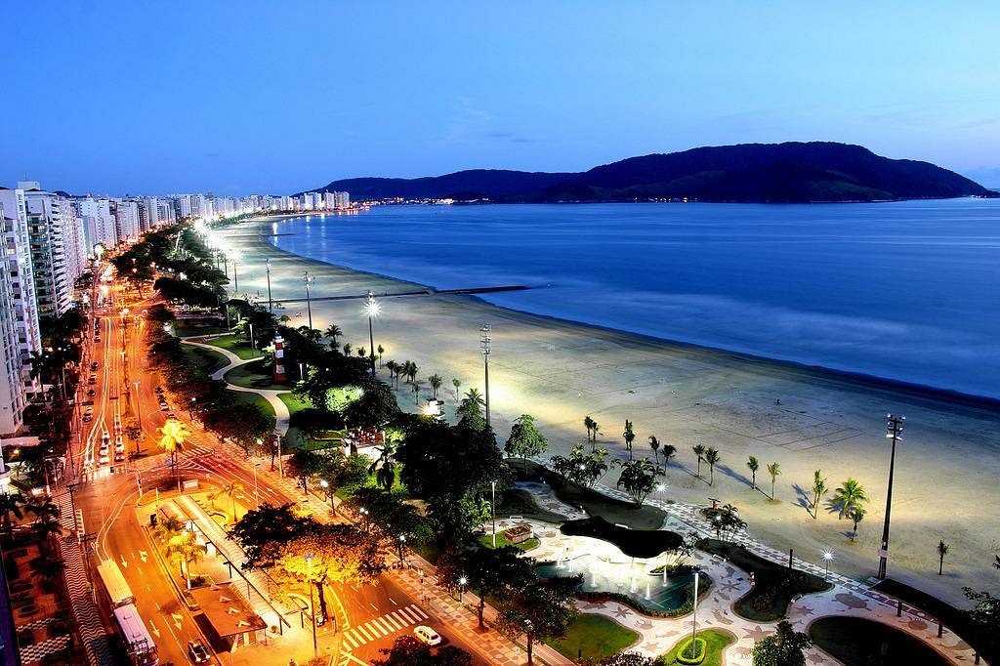

Bertioga - Inicialmente batizada como Buriquioca, Bertioga surge na trama da história do Brasil.
Guarujá - Uma cidade costeira brasileira perto de São Paulo e conhecida pelas suas inúmeras praias.

Juquehy - Com mais de 3 km de extensão, tem ampla faixa de areia bem compacta, o que atrai grande número de atletas.

Maresias- Distante 100 km de Ubatuba e 160 km da capital São Paulo, Maresias está localizada na cidade de São Sebastião, no Litoral Norte de São Paulo.
Maresias- Distante 100 km de Ubatuba e 160 km da capital São Paulo, Maresias está localizada na cidade de São Sebastião, no Litoral Norte de São Paulo.
Praia Branca- está localizada na divisa entre Guarujá e Bertioga, na saída da balsa Guarujá-Bertioga.

Riviera de São Lourenço- Uma praia do litoral central Paulista, situada na cidade de Bertioga, na Região Metropolitana da Baixada Santista, Brasil.
Santos- uma cidade costeira no estado de São Paulo, no sul do Brasil, é uma importante extensão do porto marítimo que vai do continente à ilha de São Vicente.

Aparecida- A História do Município surge com o encontro da imagem de Nossa Senhora da Conceição Aparecida, a Santa Padroeira do Brasil.

Brotas- Brotas é um município brasileiro localizado no interior do Estado de São Paulo. É o 28º maior município paulista em extensão territorial e 1.312º do Brasil com 1.101,468 km².

Campinas- Campinas é uma cidade no sudeste brasileiro, a noroeste de São Paulo. A sua Catedral Metropolitana possui um interior em madeira de jacarandá e um museu de arte sacra.

Campos do Jordão- um município na Serra da Mantiqueira, no Brasil, e faz parte do estado de São Paulo.

Cunha- Cunha é um município no leste do estado de São Paulo, no Brasil. A população aferida no Censo de 2010 foi de 21 866 habitantes

Holambra- é um município brasileiro do estado de São Paulo e microrregião de Campinas, fundada em 14 de julho de 1948. Seu nome, junção de Holanda, América e Brasil.

Jundiai- um município brasileiro do estado de São Paulo, sede da região metropolitana de Jundiaí
Petar- O Parque Estadual Turístico do Alto Ribeira, mais conhecido pela sigla PETAR, é um parque brasileiro localizado no sul do estado de São Paulo
Alagoas- é um pequeno estado do nordeste brasileiro cujo litoral tropical é marcado por praias de areia branca repletas de palmeiras, lagoas cristalinas e recifes de corais.

Aracaju- é a capital do estado de Sergipe, na costa nordeste do Brasil. É conhecida pelas praias, incluindo a Praia de Atalaia, ao centro. Junto à praia, o Oceanário de Aracaju.

Cumbuco- é uma pequena vila de pescadores situada a cerca de 25 quilômetros a noroeste da cidade de Fortaleza, no estado do Ceará, ao longo da costa nordeste do Brasil.

Fortaleza- é um município brasileiro, capital e a cidade mais populosa do estado do Ceará, situado na região Nordeste do Brasil.

Jericoacoara- é um pequeno paraíso de águas doces e salgadas na costa oeste do Ceará. Tem uma estrutura turística invejável.

Natal- Natal é a capital do estado de Rio Grande do Norte, na extremidade nordeste do Brasil. É conhecida pelas extensas dunas de areia costeiras e pelo Forte dos Reis Magos.

Paraíba- Com quase quatro milhões de habitantes, a Paraíba é o 13º estado mais populoso do Brasil. A capital e município mais populoso é João Pessoa.

Salvador- Salvador, a capital do estado da Bahia no nordeste do Brasil, é conhecida pela arquitetura colonial portuguesa, pela cultura afrobrasileira e pelo litoral tropical.

Alemanha- é um país situado na Europa Ocidental com uma paisagem de florestas, rios, cordilheiras e praias do Mar do Norte.
Barcelona- capital cosmopolita da região da Catalunha na Espanha, é conhecida pela sua arte e arquitetura.
Londres- Londres, capital da Inglaterra e do Reino Unido, é uma cidade do século 21 com uma história que remonta à era romana

Madrid- a capital da Espanha, situada no centro do país, é uma cidade de avenidas elegantes e parques grandes e bem cuidados, como o Buen Retiro.

Roma- a capital da Itália, é uma cidade cosmopolita, enorme, com quase 3.000 anos de arte, arquitetura e cultura influentes no mundo todo e à mostra.
Veneza- Veneza, a capital da região de Vêneto, no norte da Itália, é formada por mais de 100 pequenas ilhas em uma lagoa no Mar Adriático.

Portugal- é um país no sul da Europa, localizado na Península Ibérica, que faz fronteira com a Espanha. Sua localização às margens do Oceano Atlântico

Paris- a capital da França, é uma importante cidade europeia e um centro mundial de arte, moda, gastronomia e cultura.